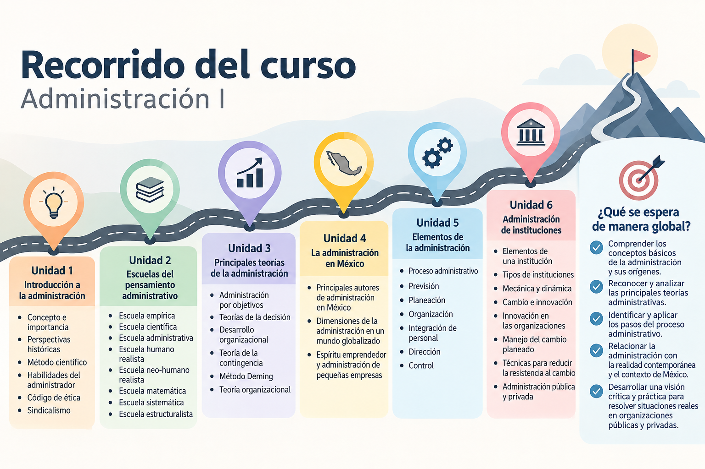

Presentación del curso — Administración I
Presentación del curso — Administración I
La asignatura de Administración I introduce al estudiante en los principios fundamentales de la administración y en la manera en que estos se aplican dentro de las organizaciones.
A lo largo del curso conoceremos cómo surge y evoluciona la administración, las principales aportaciones de sus diferentes escuelas y teorías, y la forma en que estos conocimientos ayudan a comprender el funcionamiento de las organizaciones actuales.
Más que memorizar conceptos y autores, buscaremos entender cómo la administración está presente en situaciones reales: organizar recursos, coordinar personas, tomar decisiones, resolver problemas, establecer objetivos y mejorar resultados.
Los temas se abordarán de manera progresiva, utilizando explicaciones claras, ejemplos y situaciones prácticas, para relacionar la teoría con el entorno laboral y empresarial.
La administración nos permite transformar objetivos en acciones organizadas y resultados.
Objetivo del curso
Objetivo del curso
Comprender los fundamentos de la administración, sus orígenes y principales teorías, así como los elementos que integran el proceso administrativo.
A lo largo del curso, el estudiante analizará la evolución de la administración y su aplicación en las organizaciones, relacionando los conocimientos adquiridos con situaciones de la realidad contemporánea y el contexto de la administración en México.
El propósito es que pueda identificar cómo los principios administrativos contribuyen a organizar recursos, tomar decisiones y comprender el funcionamiento de las organizaciones.
Administrar implica comprender la organización para tomar decisiones y orientar sus recursos hacia el logro de objetivos.
¿Qué aprenderá el estudiante?
¿Qué aprenderá el estudiante?
Al finalizar la asignatura de Administración I, el estudiante contará con una visión general de la administración, desde sus fundamentos hasta su aplicación en diferentes tipos de organizaciones. El programa establece el reconocimiento de los conceptos básicos, sus orígenes, las principales teorías administrativas y los pasos del proceso administrativo.
Durante el curso aprenderá a:
- Comprender los conceptos fundamentales de la administración y reconocer su importancia.
- Identificar su evolución histórica y las principales escuelas del pensamiento administrativo.
- Analizar las principales teorías administrativas y comprender cómo orientan la toma de decisiones y el funcionamiento de las organizaciones.
- Reconocer la administración en el contexto mexicano, considerando la globalización, el emprendimiento y las pequeñas empresas.
- Comprender y aplicar el proceso administrativo: previsión, planeación, organización, integración de personal, dirección y control.
- Analizar el funcionamiento de diferentes instituciones, así como los procesos de cambio, innovación y resistencia al cambio.
Al finalizar el recorrido, el estudiante podrá relacionar los conocimientos administrativos con situaciones reales y comprender cómo se utilizan para organizar, decidir y actuar dentro de una organización.
Temario Administración I
Durante el curso de Administración I recorreremos seis unidades que permitirán avanzar desde los fundamentos de la administración hasta su aplicación en organizaciones e instituciones.
Unidad 1. Introducción a la administración
Conoceremos las bases de la administración, su evolución y las habilidades relacionadas con el desempeño del administrador.
Unidad 2. Escuelas del pensamiento administrativo
Analizaremos las principales corrientes que contribuyeron al desarrollo de la administración.
Unidad 3. Principales teorías de la administración
Estudiaremos diferentes enfoques para establecer objetivos, tomar decisiones, gestionar el cambio y mejorar las organizaciones.
Unidad 4. La administración en México
Relacionaremos la administración con el contexto mexicano, la globalización, el emprendimiento y las pequeñas empresas.
Unidad 5. Elementos de la administración
Conoceremos las etapas que integran el proceso administrativo y la función que cumple cada una.
Unidad 6. Administración de instituciones
Analizaremos diferentes instituciones y aspectos relacionados con su funcionamiento, cambio, innovación y administración pública y privada.
